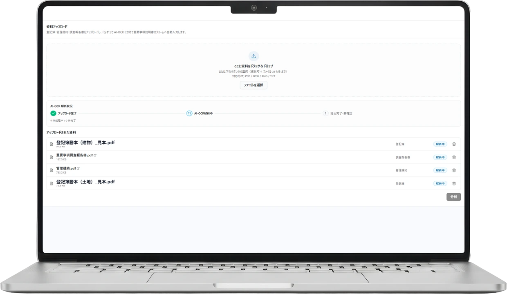
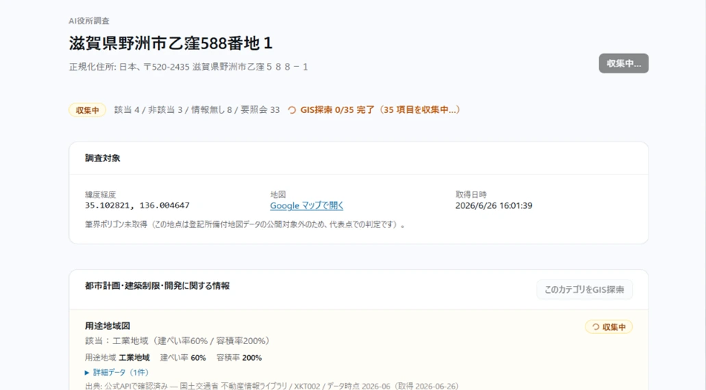
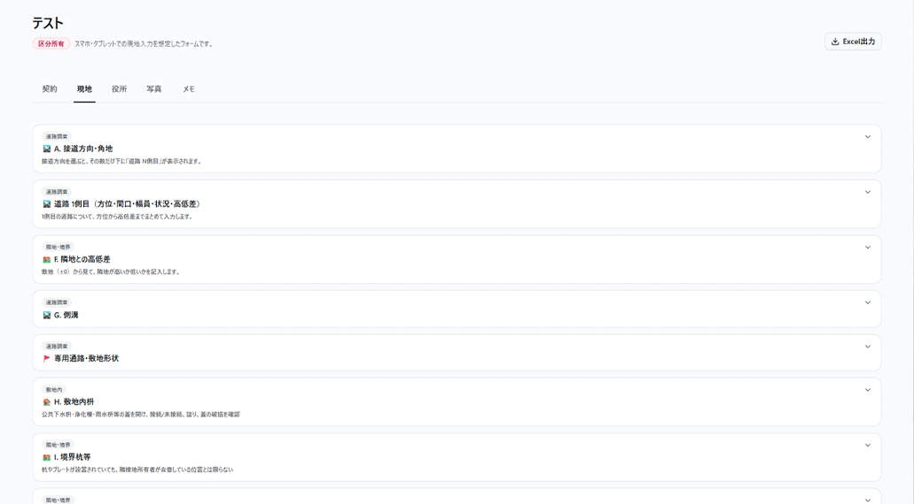
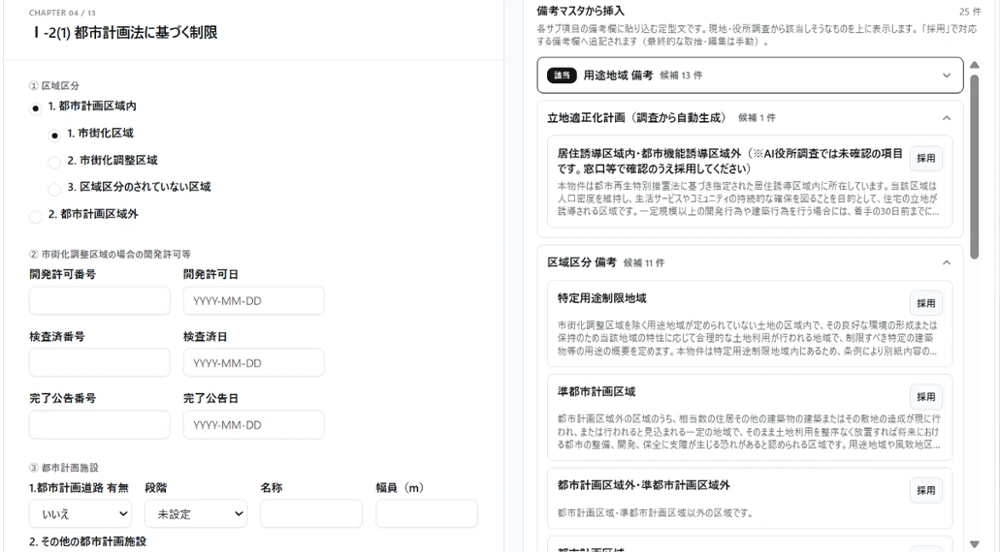
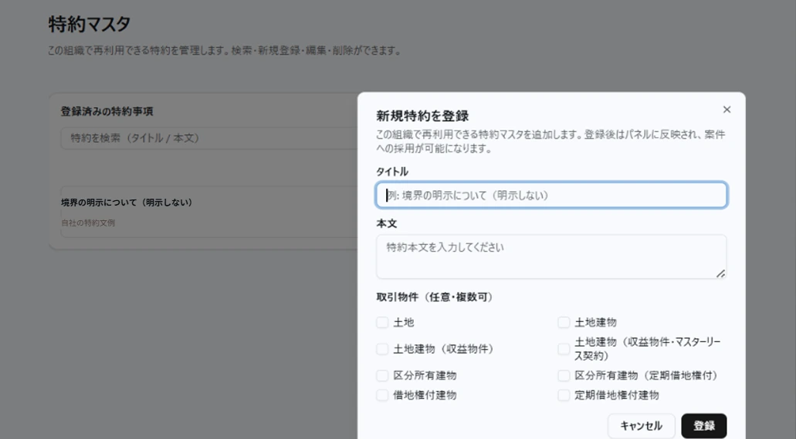
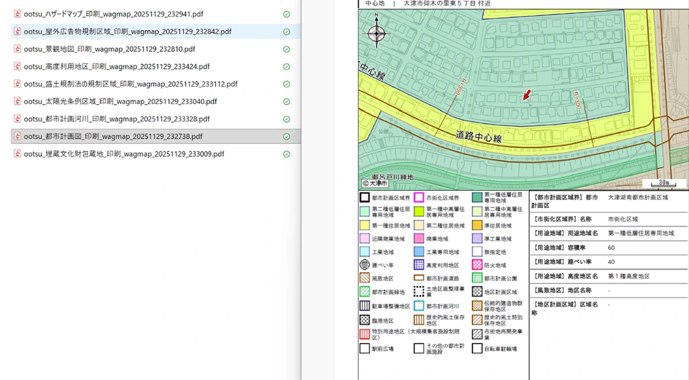

区分所有マンション特化
区分は、事務所から出ずに完結。
入れる物
→- ネットの役所情報
- 管理規約
- 重要事項調査報告書
- 各種使用細則
- 賃貸借契約書
自動でできる事
→- AIが読んで書式へ入力
- 役所情報を自動取得
得事務所から出ずに、重説が完結
いつものやり方で、
重説書類作成をAIがサポート
重説書類の作成時間
最大
95%削減
グループ会社での試算値です。資料・業務条件によって効果は異なります。
無料トライアルは面談・デモ後、宅建業者さま限定でご案内します。
ファストが、仕事を支える力に。
売買契約の場合
※ グループ会社での試算値です。資料・業務条件によって効果は異なります。
全宅連（ハトサポ）・全日（ラビーネット）・FRK の書式、各企業様の独自書式すべてに対応します。
7つの機能

資料の読み込み登記簿謄本・管理規約・調査報告書を、AIが読んで自動入力くわしく見る →
役所情報物件の所在地から、役所情報をAIが自動で取得くわしく見る →
調査アプリ現地で取った情報が、事務所のPCにリアルタイムで反映くわしく見る →
備考欄備考の文章を、自動提案・自動挿入くわしく見る →
特約自社の特約文例から、自動提案・自動挿入くわしく見る →
添付資料添付資料を自動で集め、取得元ごと保存くわしく見る →物件種別ごとの活かし方
区分所有マンションは事務所で完結。土地・戸建・一棟物は、現地から戻ると特約と備考ができています。
区分所有マンション特化
土地・戸建・一棟物特化
重説AIファストの仕組み
AIが手作業を支え、担当者が確かめる。書類づくりを一つの流れに。
01
登記簿・管理規約などをまとめて取り込み、AIが読み取って書式へ自動入力。担当者が原本と照合します。
減らせる手間資料からの転記を減らす。
02
物件の所在地をもとに、各市町村の公開GISから情報を自動取得。担当者が出典・対象地・未取得項目を確認します。
減らせる手間公開マップを探し回る手間を減らす。

03
公開情報で足りない内容を現地・役所で調べ、スマホアプリへ記録。PCへ反映した内容を担当者が確かめます。
減らせる手間現場メモをPCへ入力し直す手間を減らす。

04
法令・ライフライン等の調査内容から、穴埋めロジックで備考文を作成・入力。担当者が物件条件と注意事項を確認します。
減らせる手間調査結果を文章に組み立てる手間を減らす。

05
取引条件に応じた特約のAI提案・入力支援と、自社文例の検索・再利用。採用する内容は担当者が確認します。
減らせる手間文例探しと文章づくりを支える。
06
資料を保存し直したり、取得元を探し直したりする手間を減らす。必要な資料と出典を確認し、書類に添付する準備へ。
07
重要事項説明書・売買契約書・取引台帳・媒介契約書・付帯設備表・告知書。出力前に、帳票間の内容と物件・取引条件を確認します。
減らせる手間同じ案件情報を、帳票ごとに入力し直す手間を減らす。
NEXT
まずは、いつもの1件で確かめてください。今の書式・資料・物件の住所をお持ちいただければ、その場でできることをお見せします。

匠工房グループの現場で日々実運用。他の不動産会社様にもご利用いただいています。
※「300分→15分」は、グループ会社の現場での試算値です。
選ぶ前に
QUESTIONS / よくある質問
従来の業務では、役所調査や書類への手入力に膨大な時間を費やしていませんか？
「重説AIファスト」は、AIが登記簿や物件資料から必要な情報を自動で抽出し、普段お使いの書式に直接入力することで、重要事項説明書の作成時間を大幅に短縮します。
空いた時間を、お客様への対応や新しい案件に回せます。
ご安心ください。本サービスは、普段お使いの全宅・全日（ハトサポ・ラビーネット）の書式にAIが直接入力するため、複雑な操作や業務フローを大幅に変える必要がありません 。現場の使いやすさを最優先に設計されているため、利用開始時期は、ご利用の書式や初期設定に応じてご案内します。
また、初期導入時にはオンラインでの操作ガイドや設定支援を標準で提供しており、システムの使い方や不明点に関するメールサポートも受け付けております 。
自社の特約文例を登録しておくと、案件に合う特約を自動で提案・挿入します。採用する前に、担当者が中身を確かめてください。
収集した資料やアップロードした資料の整理を支援します。必要資料の有無や内容は、出力前に担当者がご確認ください。
集約した情報を帳票として出力し、社内確認に活用する機能を案内しています。対応する帳票や書式は、ご利用前にご確認ください。
NEXT / お問い合わせ
まずは、いつもの一件で確かめる。
現在の書式・資料・対象地域をもとに、ご利用イメージをご相談ください。
無料トライアルは宅建業者さま限定。面談・デモ後にご案内します。
ページの先頭へ ↑